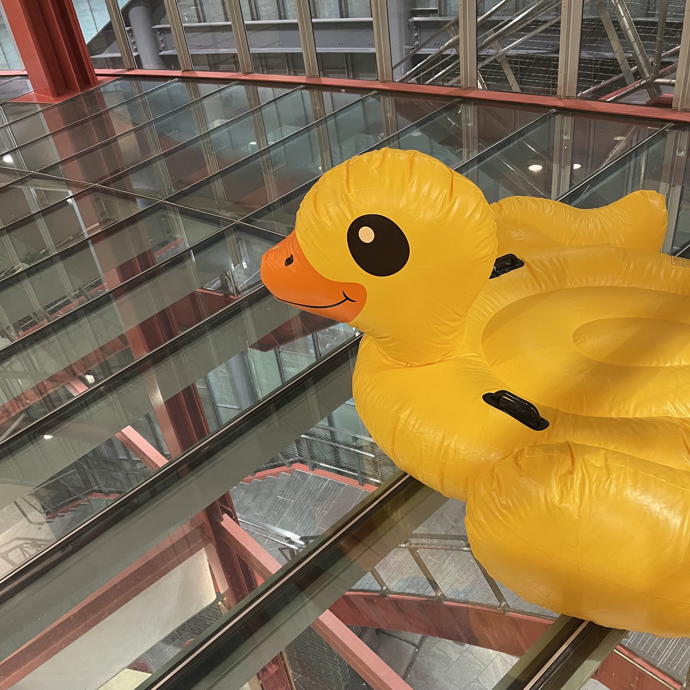

Check out the Duck Map to find where they are hiding!
It'll be in the area in front of Siebel 3305 on 2/14 from 1:30 - 4:30PM with Valentines Day Candy
Since the dawn of Computing, Rubber Ducks have been the Computer Scientists' trusted debugging and algorithm design companion. In recent years, these loyal birds have been replaced with technological gadgetry and websites like StackOverflow, GeeksForGeeks, or LeetCode. It is the goal of the Rubber Duck Preservation Society (RDPS) to reinstate the honor and prestige of the noble Rubber Ducks. If you find one of our ducks, please give it a good home in your workplace. If you are not currently in need of a rubber duck, give it to a friend, or leave it where you found it for someone else to find.
Send duck pictures to us on Instagram or email duck [at] uiucduc [dot] ky